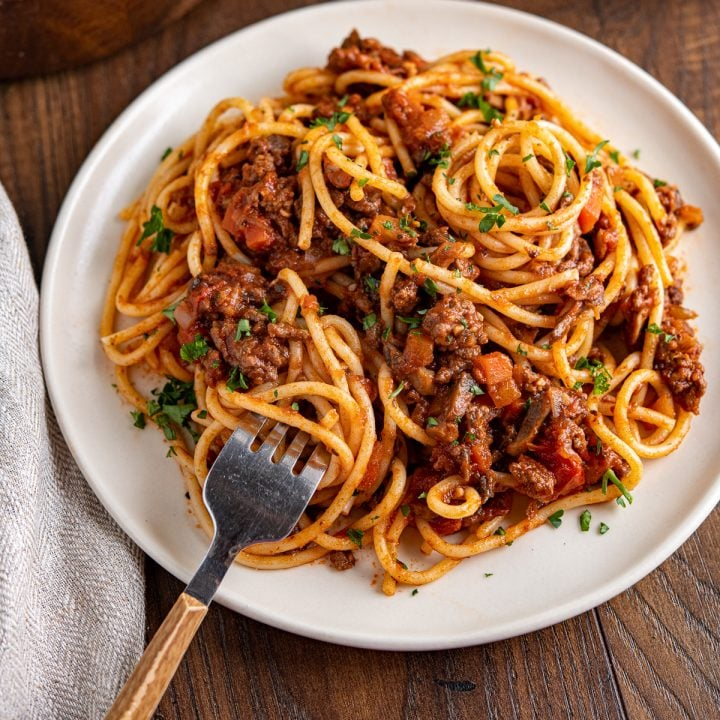

Spaghetti Bolognese

Ingredients:
- 1 lb spaghetti
- 1 lb ground beef
- 1 onion, diced
- 2 carrots, diced
- 2 celery stalks, diced
- 3 cloves garlic, minced
- 28 oz crushed tomatoes
- 2 tbsp tomato paste
- 1/2 cup red wine (optional)
- 1/4 cup fresh basil
Steps:
- Sauté vegetables in olive oil until soft
- Add beef and brown completely
- Stir in tomatoes, paste, and wine, simmer 1 hour
- Cook pasta al dente, reserve 1 cup pasta water
- Combine sauce with drained pasta
- Garnish with fresh basil and Parmesan